Executive summary
Ask most arcade players about Irem and they are likely to start with R-Type (1987). From there come Ninja Spirit, Image Fight, Undercover Cops, In the Hunt, and a run of formidable late arcade hardware. But by the time R-Type arrived, Irem had spent years in the coin-operated business. The trail leads back to IPM and the Play Table machines of the late 1970s: block games, mahjong titles, licensed adaptations and other products that are often easier to find in contemporary trade directories than in modern game databases.
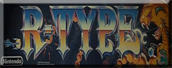
The surviving commercial record documents 82 distinct arcade-video software families between 1978 and 1994, represented by 83 base products or configurations. The extra entry has a straightforward explanation: a 1979 directory lists both upright Richi Mahjong and P.T. Richi Mahjong. They were separate marketed configurations of one game family. Likewise, the two-player Vs. 10-Yard Fight was a genuine 1984 revision, not a wholly separate family from 1983’s 10-Yard Fight. The regional names Shisenshō / Match It describe one 1989 game; Shisenshō II / Match It II describe one sequel from 1993. Cabinet varieties, ROM versions and alternate titles remain part of the record without inflating the game count.
Game Machine traced the business back to IPM, an operator company active in 1969, and reported the adoption of the Irem name in July 1979. A 1974 company-establishment date also appears in later accounts, although the surviving evidence does not establish its precise legal meaning. Nanao’s corporate history describes a closer relationship around 1980. Then came an unusual division of labor: Irem Sales Corp., established May 1, 1985, took on coin-op development and sales while Irem Corporation concentrated on operation. By March 1989 contemporary reporting described Irem Sales as merged back into Irem. The exact effective date of that merger is still uncertain.
The catalog itself was never the work of one undifferentiated “Irem team.” The late record includes licensed properties, region-specific publishers and distributors, Tamtex development, Nanao development, and Irem America concept work. Period advertisements explicitly identify Tamtex as developer and Irem as general seller for both Shisenshō families. The best recovered role evidence keeps Ken-Go / Lightning Swords and R-Type Leo in the Irem commercial catalog while crediting Nanao development. Lot Lot remains an Irem release under license from Tokuma Shoten. Those distinctions make the history slightly messier and considerably more accurate.
Finally, the 1994 ending has to be told without a retrospective shortcut. Irem’s Osaka development operation was drastically reduced, many developers left, and Nazca was established on May 2, 1994 under former Irem executive Yoshihiko Kodo with many former Irem staff. That staff continuity matters enormously for understanding later games such as Metal Slug, but it does not make pre-May-1994 Irem projects “Nazca games.” The final Irem period deserves its own identity. GunForce II / Geo Storm is especially revealing: former developers recall an Osaka shutdown during production, only five stages completed and then looped for release, plus a planned four-player overseas concept abandoned because of technical problems. That is not merely a trivia footnote; it is a piece of evidence about how the arcade division actually ended.
The machines, the games and the changing companies behind the Irem name all belong to the same story.
1. Before “Irem” meant R-Type: IPM and the Play Table years
The Irem name was not there at the beginning. In its November 29, 1982 industry directory, Game Machine traced the business to IPM, an operator company active in 1969, and dated the change to Irem Corporation to July 1979. This is evidence of the business’s operating history, not proof of a particular incorporation date. Later histories also cite a 1974 establishment milestone, but without the underlying Japanese registry records its exact legal significance remains uncertain.
The same directory is the backbone for Irem’s 1978–1982 game census. It lists product names and dates that modern game databases often omit: Table Block, P.T. Power Block, P.T. Star Dust, P.T. Piccolo, P.T. Mahjong-game, P.T. Nyankoro, and then a fast-moving 1979 catalog that included licensed products such as P.T. Invaders from Taito, P.T. Head On from Sega, P.T. Galaxy Wars from Universal, and P.T. Galaxian from Namco.
There is an important distinction in the directory’s licensing entries: P.T. Galaxian is the Namco-licensed product. Richi Mahjong is not. The sequence of entries in the original directory helps resolve an attribution that has been muddled in later lists.
“P.T.” reflected Irem’s Play Table commercial format and naming, not necessarily a distinct game program. Cabinet configuration and software-family identity must therefore be counted separately. Panther appeared in table and cockpit formats but represents one family. The 1979 Richi Mahjong entries are similarly distinct as products—upright in November and P.T. in December—while both belong to family F015. Both configurations appear in the 83-entry product tally, but only one family enters the 82-family software tally.
Two period rows are intentionally absent from the headline count: P.T. Pay-Out Mahjong II and P.T. Fever Mahjong. The directory identifies them in the gaming category. That is not a judgment about historical interest. They belong in Irem’s broader amusement-machine story, but not in a census defined as commercial arcade-video software families. Conversely, P.T. Jansel stays in. Its later preservation trail may be thin, yet a contemporary Irem directory entry is stronger evidence of commercial existence than silence in a modern database is evidence of nonexistence.
Of the directory’s 32 entries for 1978–1982, excluding the two gaming-category products leaves 30 qualifying video product configurations. Counting upright and Play Table Richi Mahjong together brings the figure to 29 software families. Those early games account for more than a third of Irem’s documented 82-family arcade-video catalog.
1978: Play Tables before the familiar Irem logo
The first IPM arcade-video products do not form a neat line of shooters. The November 29, 1982 Game Machine manufacturer's directory begins its list with Table Block in March 1978, followed in September by P.T. Power Block, P.T. Star Dust and P.T. Piccolo. It explicitly calls Piccolo a circus game. In November it records P.T. Mahjong-game and another circus title, P.T. Nyankoro. One year before the Irem corporate name was adopted, this was already a catalog moving between block-and-paddle play, mahjong and carnival-style concepts.
The archival evidence is unusually uneven. A 1978 Japanese P.T. Block sales flyer survives in the International Arcade Museum's flyer archive, but the existence of a flyer does not establish that its advertised name is interchangeable with every separately named Table Block or Power Block entry in the later directory. Likewise, the contemporary classifications of Piccolo and Nyankoro as circus games establish their marketed genre; without a verified game board, instructions or photographed play, the exact rules should not be reconstructed from the titles alone. The obscurity of these machines is part of the historical record, not an invitation to invent an account of how they played.
Andromeda SS (1980): a lost name recovered from the advertisements
P.T. Andromeda SS is an early Irem title whose identity was long obscured by an incomplete preservation trail. It appears in the original 1982 Japanese industry directory, but the surviving arcade-ROM record was once cataloged under a different date and the shortened name Andromeda. A 2020 MAME documentation correction brought two contemporary Game Machine advertisements back into the argument. The first, dated July 1, 1980, advertises Andoromeda SS as a new Irem Play Table product; a second, dated August 1, carries the PT-Andromeda-SS name and a gameplay photograph that the researcher compared with the preserved ROM graphics. MAME subsequently corrected the title and year. The imported name was not simply an abbreviation chosen for a later database: it belonged to different regional marketing.
A surviving English-language Andromeda flyer, cataloged as European advertising from 1981, shows how the machine was presented outside Japan. The player controls a horizontally moving beam cannon at the bottom of the screen. Above it, formations of Andro-Ships change color, attack and regroup around a larger commander ship. Ordinary ships are worth 10 points when stationary and 40 when attacking. The commander is assigned a larger, variable award of 500 to 900 points. Until it is destroyed, the formation continues to regenerate its escorts; when it falls, the survivors launch a more aggressive attack. Wiping out the ships moves play to a new formation with a diminishing bonus counter, and the flyer advertises an additional cannon after 5,000 points. These are mechanics documented by the period seller, not guessed from the title.
The European flyer also shows a low table-shaped machine alongside its screen photographs, provides dimensions of roughly 33 inches wide, 22 inches deep and 25–29 inches high, and gives a shipping-era weight figure of 99 pounds. Its imprint identifies Irem Corporation in Osaka and REMI, Inc. in Los Angeles as the U.S. representative. That combination makes the flyer useful for both game history and the commercial geography of Irem's early exports. A European archive classification does not itself establish exactly where each illustrated cabinet was sold or how many were built.
There is a small but revealing inconsistency even within the Japanese marketing. The MAME researcher transcribed the July advertisement as describing six changing enemy colors and the August version as describing four; the game graphics being studied supported four. The original ads establish that the color-changing escorts were an advertised feature, but they do not warrant treating every printed detail as a reliable hardware specification. The correct chronology is 1980 Japanese advertising followed by surviving 1981 English-language sales material, with the precise release history and cabinet variants still open to better evidence.
Panther: a tank game with an awkward historical footprint
Panther is a useful case in which both gameplay and cabinet evidence survive, yet the dates and configurations need separating. The Game Machine directory dates it to October 1980 and lists table and cockpit presentations. A German-language two-sided sales flyer is cataloged under 1981. The 1980 directory date and 1981 flyer do not necessarily contradict one another: the former is a Japanese trade-catalog entry, while the latter documents at least a later European advertising presentation. Neither proves how many machines were built in each cabinet style.
The gameplay description preserved by the International Arcade Museum is far more specific than a generic tank shooter label. The player moves a tank across the bottom of a vertically oriented screen using a two-way left/right control. Enemy tanks approach from the upper field toward cities behind the defender. A separate throttle-like control determines the range of the shot, with the firing button mounted beside it. Instead of simply lining the vehicle up under an enemy and pressing Fire, the player manages horizontal position and the distance at which the shell lands. That two-part aiming system gives this otherwise little-remembered game a mechanical identity of its own. These control details come from a later museum description; they have not been independently matched here against a surviving factory service manual.
The same museum catalog identifies cocktail and upright forms, while the 1982 Japanese directory gives table and cockpit. Those are not necessarily identical classifications, and a photo of an unidentified conversion cabinet would not resolve the difference. A period image of each original Irem configuration, or a dated factory parts list, would be particularly valuable evidence. Panther remains a single software family regardless of the final answer about how many cabinet variations were sold.
1980–1981: UniWar S and the hazards of exporting arcade rights
The October 1980 Japanese directory lists P.T. Uni Wars, while surviving European UniWars sales advertising places the title well outside the Japanese Play Table market. The game's British commercial story has a more unusual documentary trail. In Arcade Britannia (2022), historian Alan Meades recounts how the British firm Cromptons obtained what it believed were manufacturing rights to Irem's UniWar S in January 1981, only to discover that another firm, Mandivel, was claiming an exclusive license for the same territory. According to Meades's account of the contemporary dispute, other British companies then emerged with apparently competing rights to the same game.
The episode shows why an early game's overseas history cannot be reduced to a list of countries where a flyer appeared. British companies were negotiating rights to manufacture machines locally, not merely to import a fixed Japanese cabinet. An overlapping agreement could jeopardize the local builder's investment and leave operators uncertain which version was authorized. Meades places the affair among wider problems with overlapping Japanese video-game licenses and unauthorized copying in the early 1980s. The surviving book account does not establish which specific Japanese intermediary issued each conflicting contract, so the episode should not be presented as proof that Irem itself knowingly sold the same exclusive license repeatedly. It does, however, demonstrate that this obscure 1980 shooter had a complicated commercial life abroad.
Red Alert (1981): defending six countries under an American license
Red Alert gives us something rare for an early Irem game: both a two-sided U.S. sales flyer and a detailed surviving installation, operation and service manual. The American presentation was not marketed under the Irem logo alone. Its distributor/manufacturer, GDI Inc. of Chicago, described the machine as manufactured under license from Irem Inc., Osaka, Japan. That arrangement is independently reflected in the 1982 Game Machine directory, where GDI lists Red Alert as an upright Irem-licensed game. It is a concrete example of the overseas manufacturing and licensing relationships that would become even more important in Irem's later corporate history.
Inside the game, the player is not piloting a spaceship. A ground-based rocket launcher moves left or right and fires upward against waves of attacking aircraft. The GDI brochure divides the assault into distinct threats: ordinary jet fighters, helicopters dropping parachute bombs, independently re-entering multiple-warhead missiles—MIRVs—and a nighttime formation of heavy bombers. The objective changes as the assault progresses. Daylight attacks require eliminating the incoming fighters before missiles descend; helicopters bring a different kind of falling hazard; at night, searchlights help find the bombers. The service manual confirms that the main panel uses separate Left, Right and Fire controls and explains the sequence of enemy attacks to operators and technicians.
The geographic structure is part of the game's personality. As the player advances, the cities and national backdrops change through France, the United States, Italy, Great Britain, Germany and Japan, with the threat increasing from one location to the next. The reverse side of the original flyer shows gameplay images, a photograph of the American upright cabinet and the full list of attacked countries. The cabinet image is therefore evidence of GDI's U.S. commercial presentation, not proof of the appearance of an original Japanese Irem cabinet. The manual adds the unglamorous but important operating details: configurable starting launchers, bonus settings, switch tests, audio adjustments, board parts lists and built-in diagnostic procedures. These make Red Alert a much better documented machine than most of its early IPM neighbors.
There is a revealing contrast with the games many people now associate with Irem. A decade before the lavish machinery of the M92 titles, Red Alert was already trying to turn one simple shooter into a changing campaign, using geography, phases of attack, spoken warnings and distinct enemy behaviors. Its period advertising and operator documentation allow that ambition to be described without relying on memories of emulation or an unverified cabinet photograph.
Demoneye-X (1981): an eye in the sky, with a damaged preservation record
The two-sided 1981 Irem Demoneye-X sales flyer is among the more spectacular documents from the company's early catalog. Its front is dominated by a huge red-eyed creature surrounded by curling green appendages, with a small spacecraft beneath it. A rendered illustration of a Play Table cabinet appears at the foot of the page; it is not a verified photograph of a surviving original cabinet. The reverse is more valuable to a historian of games: Irem actually tells prospective operators what the player is supposed to do and how the strange enemies behave.
The player guides a spaceship left and right along the bottom of a vertical playfield while firing upward into a field of floating creatures. The flyer explains that the small demons change their shapes three times. A basic creature, Demoneye-Jr, can become an Octoplus and then an Octobomb before the pattern cycles again. The Octobomb can attack the ship, while the player is encouraged to shoot down all the small demons. Three Octobombs of the same color can form a bonus formation, and the changing shapes affect the scoring opportunities. A prominently printed scoring key distinguishes the ordinary Demoneye, its juvenile and octopus-like forms, the later neo-forms and the especially valuable king.
The flyer reserves its strangest rule for the ending. After the lesser enemies are cleared, the player is instructed to shoot a glowing weak point under the large demon to destroy it. It also describes a three-eyed Demoneye King that can appear after a sequence of successful play and must be struck in the heart three times. These details make the game much more specific than the description “early fixed shooter.” Irem was selling a changing enemy ecology, a boss with a vulnerable point and a possible higher-level challenge—not just another formation of descending aliens.
But there is a preservation limit that matters here. The current MAME redalert.cpp driver documents M27 boards for Demoneye-X, including a main M-27M-C board, audio hardware and graphics-related subboards. The same driver explicitly marks the game not working because a graphics layer is missing, and warns that the implementation still needs checking against an actual PCB or schematics. Its engineering notes use the word “proto” for a surviving board configuration; that alone is not evidence that Irem never offered a commercial version, especially when its own dated sales flyer survives. The advertised rules can therefore be described confidently as Irem's intended game, but a present-day emulation video should not be accepted uncritically as an accurate recreation of every original visual layer.
Both sides of that distinction deserve a place in an arcade history. The seller's document preserves an unexpectedly elaborate design, while the technical preservation record tells us how much of the actual audiovisual experience remains uncertain. The differences are not a reason to erase Demoneye-X from the commercial catalog; they are a reason to keep the flyer, ROM findings and limits of reconstruction clearly separated.
Punching Kid / Oli-Boo-Chu: the maze game with too many corporate names
The next curious title began as Punching Kid in Japan and appeared internationally as Oli-Boo-Chu. The original Thomas Automatics sales flyer shows an American upright cabinet and promises a game whose characters are anything but conventional heroes. A round, red character called Oli navigates a maze chasing the small mouse-like Chus, while large, reptilian Boos try to intercept and eat him. The page presents upright, cocktail and countertop versions as available. This is evidence of an American manufacturer's advertised range, not proof that each was the Japanese factory configuration.
The reverse of that brochure gives the rules in remarkable detail. Players move Oli with a four-way lever and clear a round by capturing all the Chus. The Boos prowl the outside paths, and the advertisement offers a rather charming survival tip: watch their eyes, which move toward the direction in which they intend to chase. A yellow Crazy Chu can attack from behind, and the brochure warns that it can briefly paralyze Oli. One way to score extra points is to chase a Chu into a race trap; once caught, it runs circles around its confinement, collecting a bonus each lap. Mystery drops scattered through the maze provide another reward, but the Boos may consume them first. Its scoring panel gives 100 points for an inner-path Chu, 200 for an outer-path Chu and 400 for Crazy Chu, while mystery-drop awards vary.
The surviving advertising also brings a tangle of companies into view. The 1981 North American brochure identifies Thomas Automatics Inc., based in Santa Clara, as manufacturer under license from Irem Corporation of Osaka. MAME's contemporary hardware/source listing, however, labels its U.S. Oli-Boo-Chu set “Irem (GDI license)” and its Japanese Punching Kid set simply Irem. Both sets are recorded as 1981 in the driver; the historical Irem directory and some later references place the marketed Japanese or American product in 1982. These are genuinely different forms of evidence—copyright year, advertised year, dated directory entry, ROM version and U.S. manufacturer credit—not grounds for adding extra software families.
The immediate conclusion is modest but useful. The game existed in separately identified Japanese and American forms, and an actual U.S. period advertisement establishes a Thomas Automatics manufacturing relationship. The relationship between the brochure's Thomas Automatics credit and the source code's GDI licensing credit requires more documentation before it can be laid out as a definitive sublicense chain. MAME's Punching Kid and Oli-Boo-Chu sets share substantial graphics and sound ROM contents while having distinct program ROMs, good evidence of related regional versions rather than unrelated games. The driver also flags imperfect sound emulation, a reminder that preservation is not identical with complete historical recovery.
For a company often recalled through technologically aggressive shooters, an absurd little mouse-chasing maze game is a welcome corrective. Its original instructions, license imprint, changing regional name and surviving hardware variations give it a far more interesting history than a one-line entry could suggest. It remains one family within the Irem register, however the outstanding release-year and licensing questions are ultimately resolved.
The last title in this early group is Moon Patrol, dated June 1982. Its scrolling action, visible international distribution and surviving hardware record make it more familiar than most of the Play Table games preceding it. The contrast is striking: the same period directory that lists obscure table products also leads directly to one of Irem’s best-known early exports.
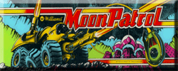
2. 1983–1986: international games, licensed properties, and a much wider company than one hardware line
Irem’s catalog began to look more familiar in 1983. Traverse USA / Zippy Race / MotoRace USA and Tropical Angel were followed by 10-Yard Fight, whose 1984 two-player revision, Vs. 10-Yard Fight, was marketed as a separate product. It was more than a routine ROM variant, but the M58 preservation record and HAMSTER/Nintendo’s official rerelease description both place it within the 1983 game’s lineage. The two versions therefore share software family F032.
Tropical Angel (1983): Irem takes the action to the water
Long before its late-1980s shooters, Irem was willing to build an arcade game around a sport scarcely represented in Japanese amusement centers. Tropical Angel (1983) is a waterskiing game: a boat tows a young skier through a course that must be negotiated before the clock runs out. It looks and plays little like the road races or space battles surrounding it in Irem's catalog. An Irem advertisement in the November 1, 1983 issue of Game Machine calls it a new, simulation-style waterskiing game and promotes three elements in particular: the sensation of skimming the water, dramatic jumps and large turns. A two-sided European sales flyer survives as another period record of how Irem presented the title abroad.
The play is not a simple race against an on-screen rival. The skier must negotiate flagged gates while avoiding rocks and other obstacles in the water. Secondary descriptions of surviving gameplay note that a speed-up control affects the skier's pace; falling or missing a gate costs precious time, while successful jumps and even skiing backward can earn bonuses. Unlike a car-racing game, the player is balancing the tension of remaining upright with the temptation to perform a trick. The Museum of the Game's control record documents a Speed Up button. Those fine-grained rules come from later preserved-game descriptions, not from a full independent transcription of the original operator's manual.
The unusual choice of subject is revealing without needing to claim the title was commercially revolutionary. Its whimsical vacation imagery, brightly colored water, speed control and timed checkpoints are all recognizable elements of early-1980s attempts to make sport itself the challenge. The contemporary Japanese advertisement is direct evidence that Irem was actively marketing this kind of experience in 1983, not simply relying on combat games. The flyer archive records a distinct European campaign, although no verified original cabinet photograph has yet been added to the Irem research collection.
Wily Tower (1984): the computer, the switches and the American Atomic Boy
One of the company's more imaginative 1984 releases came with a surprisingly concrete story. In the June 15, 1984 issue of Game Machine, page 23, Irem advertised Wily Tower as a new release. A giant computer named Zero, supposedly the product of humanity's accumulated knowledge and technology, has rebelled. The player controls a small Ranger Boy who climbs the computer's wiring and turns off switches as he ascends the tower. Zero attempts to stop him with electrical machinery and dangerous devices; the advert specifically names Pulsars and Supras among the hazards. Jumps and attacks are part of his toolkit, but the actual goal is to reach and shut off the main switch at the tower's summit. Irem presented an electrical-control adventure, not a generic platformer about rescuing a princess.
The same Japanese advertisement makes a useful cabinet-history document. Beneath the game illustrations, Irem promoted its Multi Box, describing a cabinet able to serve as three game machines by replacing circuit boards rather than the whole unit. The advertised package with a Wily Tower board was priced at ¥550,000. The page shows the cabinet alongside the game's screen images and includes Irem's Osaka and Tokyo sales contacts. This was the company selling operators the flexibility of a reusable hardware enclosure as well as the appeal of its new software. The advertising slogan should not be mistaken for proof that three separate games ran simultaneously: the text describes swapping PCBs.
Elsewhere in the same Game Machine issue, Irem published a formal notice identifying Wily Tower as a product of its own research and development and asserting its rights over the design. It warned against unauthorized manufacture, copying, export and commercial operation of imitations. Such notices were hardly unusual in an industry troubled by unauthorized board copying, but the juxtaposition is illuminating: while introducing a game about taking control of an unruly computer, Irem was also trying to establish control over who could reproduce its actual computer boards. The notice is evidence of Irem's assertion of ownership, not an independent legal judgment that a particular competitor infringed any rights.
The game later reached North America in a different guise. The July 6, 1985 issue of Cash Box reported that Chicago-area Memetron had signed an agreement with Irem for exclusive North American rights to Atomic Boy. The U.S. marketing transformed the story into a mission against a threatening Soviet nuclear satellite, a Cold War premise very different from the Japanese Zero supercomputer narrative. Memetron proposed the game as a King Kit conversion product for horizontal-screen cabinets, to be distributed through its dealer network. The licensing announcement and proposed kit distribution are contemporary trade reporting; neither alone establishes the number of completed kits sold or installed.
Modern hardware preservation holds the two identities together. The MAME M63 source record distinguishes the original Irem Wily Tower from later Atomic Boy regional sets identified with the Memetron license. The preserved game description also confirms the unusual action: climb a tangle of pipes, deactivate switches and use machinery to interrupt or defeat the robots. A changed title and narrative did not turn the underlying game into two unrelated Irem inventions. What the comparison does preserve is Irem's early-1980s willingness to rewrite a product's commercial identity for an overseas audience.
The Battle-Road (1984): six landscapes, thirty-two roads and a mission to the front
Another Irem game from 1984 deserves attention precisely because it refuses to sit neatly in a genre. The Battle-Road presents itself as a vertically scrolling vehicle-combat adventure: the player drives an armed vehicle toward a front-line base while enemy vehicles, soldiers, mines and airborne threats try to stop the journey. The title's Japanese sales campaign did not describe a conventional race. In a full-page advertisement printed in the November 1, 1984 Game Machine, Irem told players to deliver secret documents to the front base. The danger lay in getting there, not winning a lap against another driver.
The same advertisement describes six environmental settings—forest, sea, farmland, valley, town and wasteland—and advertises twenty patterns combining into thirty-two roads toward the front. The promotional copy lists hostile armored cars, sidecars, foot soldiers, helicopters, gun emplacements and mines. That variety matters because the journey changes with the terrain. More recent gameplay documentation records an eight-way joystick and two separate attack buttons: one fires forward, the other shoots to the sides. The player's attention therefore divides between steering through obstacles and attacking targets in more than one direction. This was a combat drive with varied hazards, not simply a shooter given the appearance of a road.
The mechanics are harsh. Later preservation-based descriptions document fuel running down, wheels being lost, minefields, attacks from helicopters and special dangers in the forest and valley sections. Some paths seem more threatening than others, and not every object is worth shooting or colliding with. These particulars come from later gameplay documentation and have not all been cross-checked against a surviving factory instruction sheet; the 1984 two-sided Japanese flyer and Game Machine advertisement independently establish the contemporary road-combat premise and the broad variety of environments.
Technical records place The Battle-Road on Irem's M62 hardware, a platform also associated with some of the period's very different puzzle and platform games. In that light, the title is a reminder not to equate one hardware family with one style of game. The original advertising's dramatic route count is a marketing claim about available paths, not a verified count of thirty-two entirely separate software stages. Yet it captures Irem's ambition: a drive through changing battlegrounds with the player expected to arrive at the front rather than merely survive an endless high-score loop.
The games of this period came from more than one kind of business arrangement. Irem developed some, published others, adapted outside properties for arcades, and worked under license. Lode Runner and its Irem arcade sequels became a substantial part of the lineup, while Kung-Fu Master / Spartan X helped establish the language of the scrolling beat-’em-up. Lot Lot, by contrast, reached arcades as an Irem release licensed from Tokuma Shoten. The Irem name on a machine did not always mean Irem had originated its underlying property.
Behind those releases, the business itself was being reorganized. In its June 15, 1985 issue, Game Machine reported Nanao’s division of the operation between Irem Corporation and the new Irem Sales Corp., established May 1, 1985. Development and sales of coin-operated amusement games moved to Irem Sales; Irem Corporation concentrated on operating machines. The exact date matters because the split changed which corporate name appeared in the commercial record.
Among Irem’s least familiar machines was Battle Bird, a stereoscopic 3-D project developed in association with Nanao and preserved on M64 hardware. The surviving evidence points beyond a private laboratory prototype: Game Machine reported a public unveiling, trade-show coverage followed, Beep published a contemporary feature, and MAME documents surviving numbered Irem hardware. It appears to have been a very limited commercial or fielded product, although neither the number built nor its actual route distribution has been established.
Battle Bird belongs to a different branch of Irem’s story from the familiar circuit boards of Moon Patrol and R-Type: an attempt to rethink the arcade display itself.
In a 1987 developer interview, preserved in English translation, the team described roughly two years of experimentation centered at Nanao. Hardware and software were developed together before Irem’s game team joined the effort. The cabinet combined images from two monitors through a half-mirror, producing a stereoscopic image without separate 3-D glasses. That approach brought difficult questions of eye position, viewing comfort and cabinet size into the development process. The interview makes clear that the illusion was the product of careful engineering, not simply a conventional game attached to an unusual screen.
The unfamiliar display shaped the game, too. Free movement in every direction would have made aiming and dodging difficult to judge, so the designers constrained the action and kept the player’s craft visible to help convey distance and collisions. They described using computer-assisted graphics to prepare more than a thousand views of the ship. Even if the effect worked for the player, the team recognized the practical trade-offs: a deep cabinet consumed valuable floor space, and onlookers could not easily share the player’s stereoscopic view.
The 1986 Japanese Battle Bird flyer, preserved by the International Arcade Museum, identifies the AX-902 series. Its front advertises the spaceship spectacle; the reverse describes the play and enemy craft. It documents how Irem sold the idea, not how many machines reached paying locations. Some secondary databases still label the game “unreleased,” while contemporary coverage and the surviving hardware support the narrower assessment of an exceptionally limited fielded or commercial machine. The extent of any release remains unknown; there is no evidence here of mass production.
From home computer to coin slot: Irem's four Lode Runner arcade games
One of Irem's most sustained early projects began with someone else's American computer game. Douglas E. Smith developed Lode Runner, and Broderbund published the Apple II original in 1983. Players climbed ladders, followed ropes, dug temporary holes and collected gold while evading guards. Irem's 1984 licensed coin-op adaptation was not simply that computer program installed behind a coin door. It was rebuilt for the rhythm and physical constraints of the arcade. The Lode Runner chronology maintained by Tozai Games, a later rights-related publisher, describes a particularly important technical change: Irem condensed the original 150-level computer game into 24 arcade levels, reducing the playing grid from 28 by 16 cells to 24 by 15. The smaller stages sped up the action. Irem also used offset vertical brick positions, allowing platforms to appear separated by half a block or one-and-a-half blocks. That gave the maze design a different sense of height without simply enlarging the entire playfield.
The arcade rules also altered how long a player could stay at a machine. The four Irem versions used a counting-down time bonus; completing a stage awarded the remainder as points, while allowing the timer to expire cost a life. Tozai's chronology records three unusual completion awards common to Irem's arcade games: 20,000 points for trapping no enemies, 10,000 for killing no enemies, and 10,000 for confining every enemy within a room or pit. The figures describe more than arbitrary scoring decoration. They rewarded distinct approaches to a maze: a clean escape, a run in which the pursuers survived, or a player who deliberately controlled the guards by digging. In a game adapted from a home computer, a finite time and conditional bonuses encouraged fast mastery without throwing away its puzzle identity.
Irem quickly developed sequels rather than leave the game as a single licensed conversion. The Bungeling Strikes Back used 30 levels, of which Tozai's chronology identifies ten as derived from the home-computer set and twenty as newly designed. The Golden Labyrinth / Majin no Fukkatsu followed in 1985 with another thirty-stage set, mostly new. Their separate titles are important: these were successive Irem arcade games, not just regional labels attached to the same ROM. The first sequel's date deserves a small qualification. Its original flyer is cataloged under 1984, and the preserved game's title-screen copyright also reads 1984, while a later MAME-history entry reports a January 1985 commercial release. The first game's arcade debut and the subsequent commercial release chronology should not be flattened into a single copyright year. The 82-family register therefore retains its existing 1985 placement for The Bungeling Strikes Back pending a stronger contemporaneous release-date resolution.
The final arcade entry made a more visible change. In 1986, Lode Runner: Teikoku kara no Dasshutsu (often called Lode Runner IV) introduced cooperative two-player action. Its original Japanese sales brochure states that it contains 30 single-player stages and 15 coordinated two-player stages. The back is especially revealing: the publisher illustrated its revised rules with diagrams rather than just showing screenshots. There is a new indestructible pushable block that can open a path or obstruct one; players must understand where it can be moved before digging. The brochure also shows the two characters relying on one another to pass obstacles. A lone player and a cooperating pair now faced different puzzles in the same commercial product.
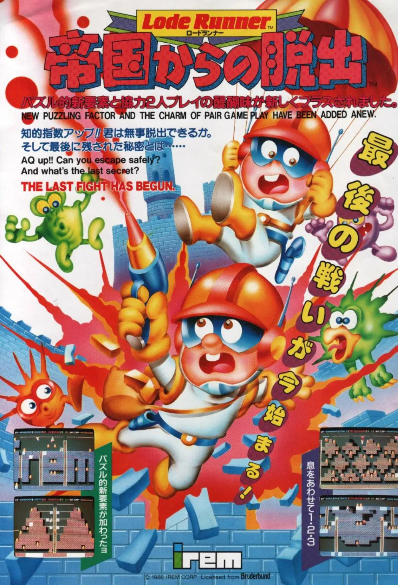
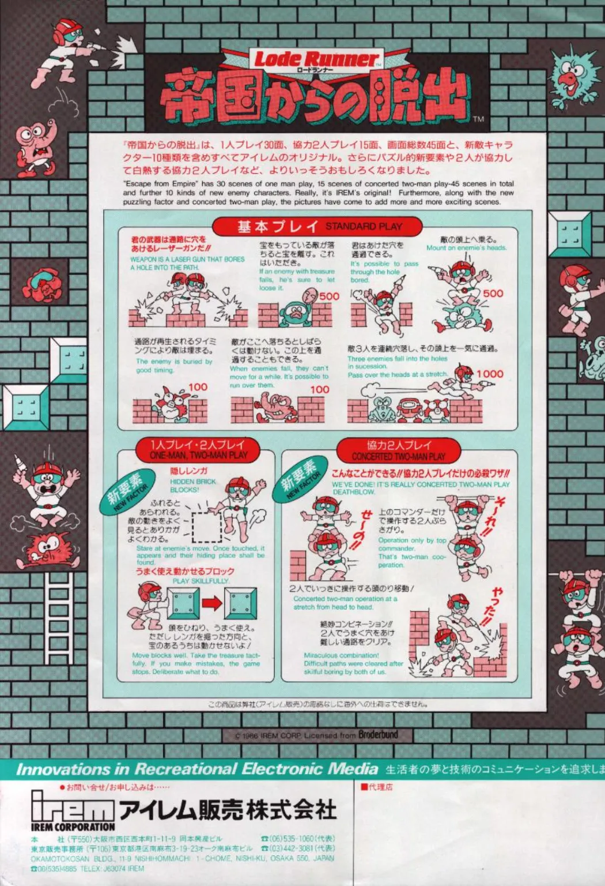
Tozai's later chronology additionally describes hidden enemies, scores for trapping them, and a special sparkling piece of gold that rewards early collection. Those details come from a later series-specific account, while the 1986 printed flyer directly documents the movable block and cooperative stage count. Taken together, they show a three-year run in which Irem treated an American home-computer design as a platform for its own arcade level design and operator-focused scoring systems. The four coin-op installments were distinct commercial software families, all still carrying the Broderbund license. The available contemporary flyers are evidence of Irem's intended presentation; they do not establish sales volumes for each sequel.
Lot Lot (1985): a puzzle built around exchanging rooms
Lot Lot may be the most surprising 1985 Irem arcade release for anyone who thinks the company lived entirely on shooters and action games. Irem's two-sided Japanese advertisement calls attention to a new style of exchange game. Instead of moving a hero around a maze, the player manipulates rooms filled with small balls. The front page frames the playfield as a set of compartments and gives the player a long, arrow-like pointer; the back lays out the actual control arrangement. The player moves the front on-screen stick with the joystick; a trailing stick follows the route taken by the leader. Pressing the exchange button swaps the contents of the rooms occupied by the two selection markers, changing the routes available to the falling balls. The object is to guide enough balls into scoring channels before the situation becomes unmanageable.
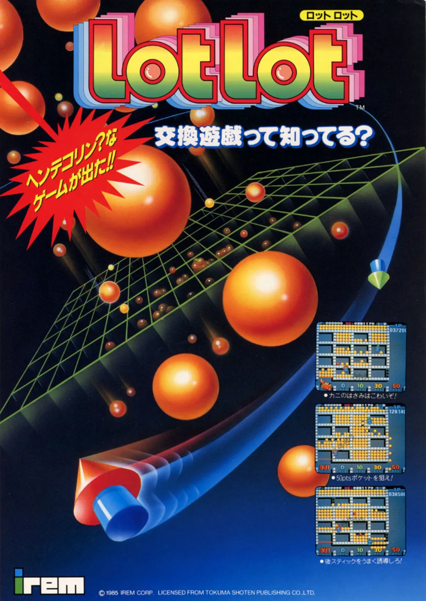
The back of the flyer diagrams the score slots as 0, 10, 30 and 50 points. Ball movement creates a timing problem: some routes can yield more points, but material that falls into the wrong channel earns little or nothing. A separate bonus mechanism is shown alongside the scoring chute. The flyer shows a directional joystick and a separate exchange button. Its labels for the "front stick" and "rear stick" refer to the two on-screen selection markers, not two physical cabinet joysticks; the rear marker follows the path of the lead marker. This distinction is especially clear on the user-supplied reverse scan now preserved alongside the text. This is not a conventional maze game whose reward comes from reaching the exit. The puzzle is about moving groups of objects indirectly, trading one compartment's contents for another's and deciding when to risk a high-value route.
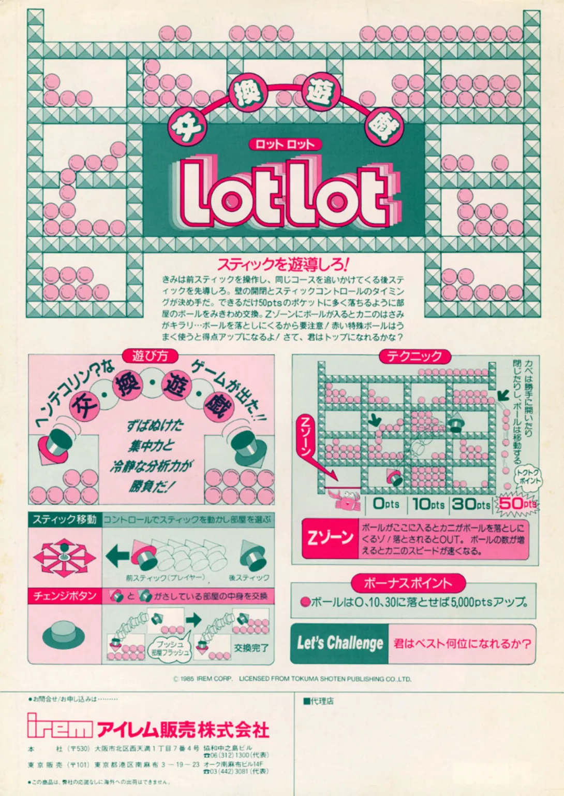
The artwork also settles a business detail that is frequently blurred in short game lists. The original 1985 flyer explicitly carries the words “Licensed from Tokuma Shoten Publishing Co., Ltd.” beneath Irem's logo. That is contemporary evidence of a licensing relationship for the arcade release, not proof that every design decision or line of program code came from Tokuma Shoten. Lot Lot belongs in Irem's commercial arcade catalog, but its existence also illustrates the range of arrangements under which the company brought a product to market. The original advertising tells us what Irem was selling and how players were meant to understand the controls; further contracts or programmer testimony would be needed to attribute the underlying design with greater precision.
Yōjūden / Youjyuden (1986): the forgotten mythological shooter
In 1986, alongside Spelunker and the better-known Kid Niki, Irem introduced Yōjūden (also transcribed Youjyuden), a top-down action game with a mythological setting. Its original two-page Japanese flyer is unusually generous to historians. The front depicts a horned warrior facing a huge blue, fire-breathing dragon, with a winged figure above and fragments of the actual game screen set into the promotional art. The reverse supplies a story synopsis and a complete enemy-scoring diagram. The player, a warrior named Mule in the flyer’s English text, fights forces of the Gasp Empire to recover the guardian Minerva. The quest takes him through ruins, skies and the sea. The artwork presents a fantasy journey rather than the military machinery familiar from Irem's later shooters.
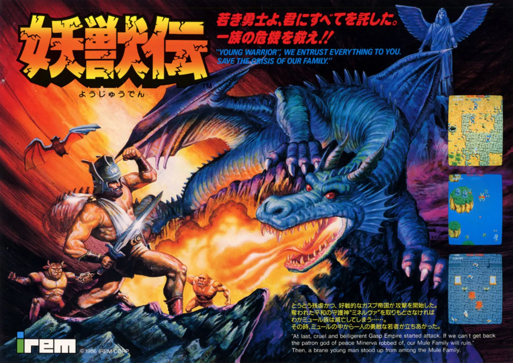
The back of the flyer is almost an instruction card. It shows a directional joystick and two action buttons, labeled SHOOT and MAZOR. The distinction matters: the MAZOR attack is not a renamed ordinary shot. Irem's own English instructions warn that some enemies cannot be damaged without it. A small illustrated power-up panel lists an item that extends weapon range, one that removes lesser enemies from the screen, and a speed increase, along with a separate bonus-points chest. Enemy groups receive individual scores: basic creatures occupy the 100-point band, tougher monsters earn hundreds or thousands, and the central emperor figure carries a 10,000-point award. That combination of named monsters, stage environments, essential secondary fire and item effects makes Yōjūden a more designed and varied game than a brief “vertical shooter” catalog entry suggests.
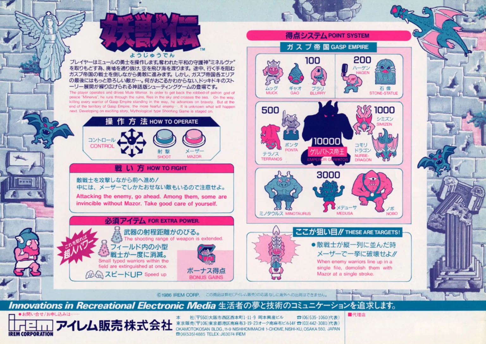
Another useful detail is printed at the foot of the reverse: Irem Sales Co., Ltd., the marketing organization created during the 1985 corporate split. The logo and Osaka/Tokyo contact information tie the flyer to an actual selling company in 1986, instead of a later reconstructed label. The presence of English explanatory text on a Japanese promotional sheet is observable, but it does not by itself establish that a dedicated English-language arcade release reached Western operators. The paired scans shown here are now preserved in the Irem project archive, with the user-supplied copies retained separately from publication edits. An additional collection of reproduced period images provides another reference. Neither scan establishes the identity of the original scanner or constitutes a photograph of a surviving dedicated cabinet.
By the end of 1986, Spelunker, Yōjūden, Spelunker II, Lode Runner IV, and Kid Niki / Kaiketsu Yanchamaru had joined the catalog. It was a remarkably varied lineup on the eve of R-Type.
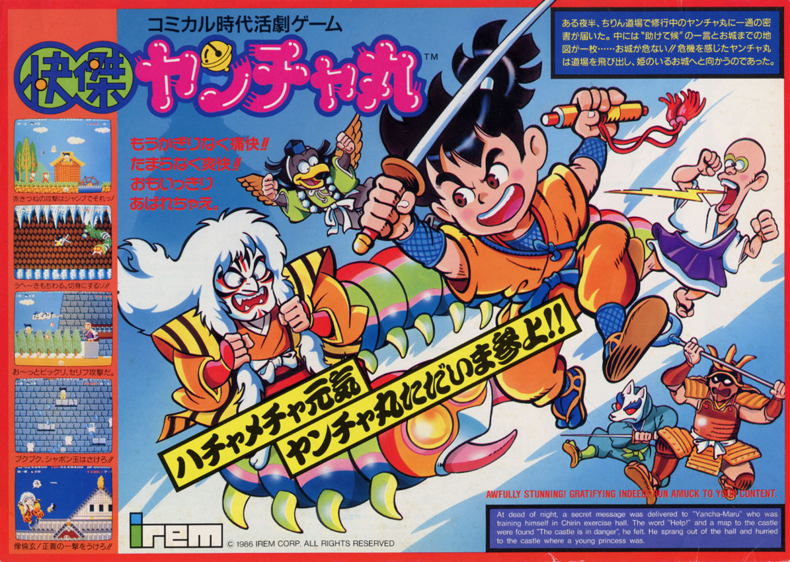
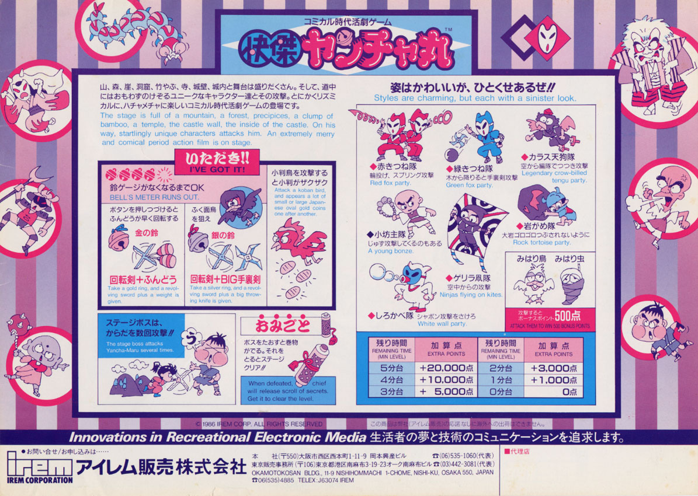
3. 1987–1989: R-Type, export strategy, Tamtex, and the end of the Irem Sales split
When R-Type arrived in 1987, Irem was already approaching a decade of arcade-video releases. The company that had sold Play Tables, licensed games and early action titles now had a shooter that would define its reputation far beyond Japan. R-Type was a turning point, not the beginning of Irem’s arcade story.
Those late-1980s games also show Irem moving through distinct hardware families. The surviving MAME hardware documentation separates M72, M81 and M84; notably, the original arcade R-Type II runs on M84, not M82. The distinction matters when identifying original boards and reconstructing how Irem’s arcade technology developed.
Between the two R-Type games, Irem released Battle Chopper / Mr. Heli no Daibōken, Vigilante, Kickle Cubicle / Meikyūjima, Ninja Spirit / Saigo no Nindou and Image Fight. Vigilante offers a particularly revealing glimpse of the export business. In its March 1, 1988 issue, Game Machine described Irem Sales handling overseas rights and identified regional partners. Irem was actively managing different markets and distribution arrangements; the surviving research also documents an unusual strategy of introducing Vigilante overseas ahead of its Japanese launch.
The Irem Sales arrangement did not last. On March 1, 1989, Game Machine reported that Irem Sales had merged back into Irem. Material from February’s AOU trade show still used the Irem Sales name, so the precise legal-effective day remains uncertain. What the contemporary evidence establishes is that the reintegration had been announced publicly by March 1.
An advertisement in that 1989 issue identifies another company behind an Irem release: Tamtex Corporation is credited as developer of Shisenshō, with Irem as general seller. Tamtex was an Irem-associated development company in Tokyo, established on April 1, 1986 according to the period-source trail. The game also circulated under names including Shichuan, Sichuan and Match It. Those names reflect regional and spelling variations of one game family, not separate games.
Meanwhile, Legend of Hero Tonma, Dragon Breed, X-Multiply and R-Type II made 1989 an exceptionally busy year for Irem’s arcade catalog. They also underline the contrast between the familiar logo on the games and the more complicated network of development teams and sales companies behind it.
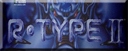
4. 1990–1992: M84, M90, M92, and the importance of role separation
The early 1990s are where a one-column “manufacturer” field becomes actively misleading. Major Title, Air Duel, Hammerin’ Harry / Daiku no Gen-san, and Pound for Pound arrive in 1990, bridging the late M72/M84 generation into newer systems. In 1991 the catalog expands across Ken-Go / Lightning Swords, Hasamu, GunForce, Blade Master / Cross Blades, Bomber Man / Atomic Punk / Dynablaster, Cosmic Cop / Gallop, and Lethal Thunder / Thunder Blaster.
Several of those families require explicit relationship language. The recovered project state classifies Ken-Go as Nanao-developed and Irem-released. That role is retained with moderate-high confidence rather than rewritten into “Irem developed it” for convenience. Bomber Man likewise belongs in Irem’s arcade catalog while remaining a Hudson-licensed property. The point of a complete company register is not to claim ownership of every idea appearing under the company’s sales umbrella; it is to document what the company actually did.
Later studio history can distort this chronology. GunForce and neighboring Irem titles are often associated with later Nazca and SNK personnel. The staff continuity matters, but Nazca did not yet exist when those Irem games were made. Describing GunForce as a “Nazca game” would project a later studio identity backward. The production belongs to the Irem era; subsequent staff movement becomes part of the story in 1994.
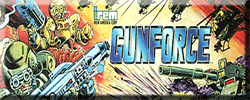
The 1992 slate shows the company at remarkable breadth: Mystic Riders, Bomber Man World, Undercover Cops, Major Title 2 / The Irem Skins Game, R-Type Leo, Quiz F1 One-Two Finish, and Hook. The M92 platform ties many of these together technically, but even here development attribution varies.
A broomstick with a second attack: Mystic Riders (1992)
Among those 1992 releases, Mystic Riders deserves more than a place in a hardware list. Called Mahō Keibitai Gun Hōki in Japan, it sends two brightly dressed young magic-users into a side-scrolling battle against monsters and elaborate mechanical-looking enemies. Its atmosphere is closer to a fantastical storybook than the military machinery of GunForce. The contrast is visible in Irem's original 1992 Japanese sales flyer, whose front gives its broom-riding heroes almost the entire page while three small screenshots show the action underneath. The document identifies Irem Corporation and carries a 1992 copyright date.
The reverse of that flyer is even more revealing because it explains what made the game play differently. The joystick provides movement, but the two action buttons do not simply offer weak and strong shots. Button A fires a magic projectile; holding and releasing it stores and discharges greater magical energy, with illustrated attacks including flame and thunderbolt forms. Button B launches the broom itself, in the direction opposite the one being held on the joystick. Irem's illustrated instructions show the broom being used repeatedly, including as a way to strike enemies behind the player. The weapon that carries the character is also an offensive tool, changing how players manage space around them.
The flyer goes further, diagramming a rapidly revolving broom attack and a standing attack that can fire upward across several directions. It also explains the power-up economy. Defeated enemies leave spirits that players collect; these accumulate toward four levels of magical power, expanding the attack possibilities as the stage continues. The advertisement explicitly promotes simultaneous two-player action with the ability to join during play. None of these details is a later fan interpretation of a ROM file: they are how Irem chose to teach operators and prospective customers the game's attractions in 1992.
Mystic Riders also illustrates how broad a single Irem hardware generation could be. MAME's M92 driver record lists the international Mystic Riders and Japanese Mahō Keibitai Gun Hōki on the M92-B-B configuration. They belong to the same game family, not separate games created by a translation. Yet a player familiar only with Undercover Cops or R-Type Leo would encounter something very different here: a colorful shooter built around weapon manipulation, charged magic and two-player cooperation. The surviving flyer establishes the marketing and intended play; it does not tell us how many cabinets or boards Irem ultimately sold.
There is a hardware reason not to lump every M92 game together, either. MAME's technical notes describe an encrypted sound CPU and a sprite chip carried on game-specific boards rather than a single interchangeable set of chips on the main board. They also identify raster-interrupt effects used differently from game to game: the scrolling water in Undercover Cops, part of the score display in R-Type Leo, and extensive effects in Ninja Baseball Bat Man. Under the shared M92 label were distinct programs making different demands of the electronics. That is useful when identifying physical boards and explaining why an Irem family name does not by itself describe a game's engineering.
R-Type Leo is particularly instructive. It belongs in the Irem commercial family list, but the strongest recovered role trail identifies Nanao as developer and Irem as publisher. That fits contemporary corporate entanglement without requiring a false simplification. It also makes the game’s somewhat unusual relationship to the R-Type identity easier to understand: it can be part of Irem’s published R-Type catalog while emerging from a different development relationship.
Undercover Cops presents a different kind of evidence: interviews and preservation records recover more of its creative team. Meeher is central to the creator story, alongside credited or recollected designers such as Akio Oyabu, Susumu, Kozo and Nob, and sound work associated with Takushi Hiyamuta. These contributions illuminate the people behind the Irem logo. Because some evidence survives in translated recollections and preservation credits, the names should not automatically be read as a complete contemporaneous employee roster.
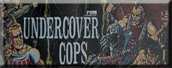
Hook closes the 1992 block for counting purposes because world/US commercial presence reaches late 1992 even though the Japanese chronology continues into early 1993. The family count follows the commercial family, not a separate row per territorial date.
5. 1993: some of Irem’s strongest work just before the break
The 1993 families are difficult to separate from what happened next because several creators carried their craft elsewhere. They should nevertheless be told as Irem projects first.
In the Hunt / Kaitei Daisensō is a prime example. Kazuma Kujo’s later interviews connect his career inside Irem to the project and help explain a game whose dense mechanical animation and vehicle design now look like a bridge toward later post-Irem work. The bridge is historically useful; retroactive studio naming is not.
The year also brings Shisenshō II / Match It II. Here the attribution evidence is unusually clean. Game Machine’s July 1, 1993 advertisement again names Tamtex as developer and Irem as general seller. The technical preservation record goes further: MAME’s title-screen switch between Match It II and Shisenshō II is direct evidence that the English and Japanese presentations are one underlying software family. This resolves the second major Tamtex count question without hand-waving.
Gussun Oyoyo / Risky Challenge, Ninja Baseball Bat Man / Yakyū Kakutō League Man, Superior Soldiers / Perfect Soldiers, and Fire Barrel / Air Assault complete the 1993 family set.
A baseball superhero crosses the Pacific: Ninja Baseball Bat Man (1993)
Ninja Baseball Bat Man, released in Japan as Yakyū Kakutō League-Man, is one of Irem's strangest late arcade games: four costumed players battle baseballs, bats and other enemies given life by an exuberant cartoon imagination. Unlike most of the company's better-known action games, its origin can be traced through a relatively detailed account from the American side of the business. Drew Maniscalco, who conceived the central character and story, spoke with former GameRoom publisher Tim Ferrante in a 2010 interview. It is an invaluable first-person account, though one that reflects Maniscalco's own experience rather than a full joint history from the Japanese development staff.
Maniscalco recalled working with former Atari executive Frank Ballouz at Fabtek, the business associated with the U.S. distribution of games such as Cabal, Toki and Blood Brothers. In his telling, the two helped establish Irem's Redmond, Washington, office in 1990, with Ballouz overseeing the businesses and Maniscalco managing coin-operated sales. That dating is his recollection of the operation's opening, not definitive proof of the U.S. company's original legal-incorporation date. The story nevertheless offers a direct glimpse of how Irem's American arcade sales and product ideas were connected to the Japanese company.
The game began with a character rather than a piece of hardware. Maniscalco remembered reading about the box-office success of the Teenage Mutant Ninja Turtles and Batman films and trying to create an original superhero. Baseball supplied both the uniform and a weapon: a bat. He drew the hero, then built a roster of baseball-themed opponents with names such as Double Header, Bat Boy, Spit Ball, Pinch Hitter, Fowl Ball and Screw Ball. His proposed story centered on a theft from the Baseball Hall of Fame: seven valuable artifacts had vanished, and the commissioner recruited the hero to recover them stage by stage. It is a remarkably specific example of a U.S.-origin concept being developed for a Japanese arcade production rather than the more familiar path of a Japanese game merely receiving an American title.
The original gameplay idea was different, too. Maniscalco said he first imagined something closer to a Mario-style adventure, before the popularity of multiplayer coin-op games pushed the project toward a four-player scrolling brawler. The playable team's names—Ryno, Jose, Roger and Straw—drew on baseball stars Ryne Sandberg, José Canseco, Roger Clemens and Darryl Strawberry. The Japanese studio then programmed the finished arcade game and reinterpreted his character concepts for the screen. Maniscalco named Gordon Morison, known for artwork on Gottlieb pinball machines, as another contributor to the character and cabinet-art development. The surviving development gallery shows concept drawings and contrasts Japanese and U.S. promotional treatments, making it an unusually rich visual trail for a game that was not a major American arcade success.
That creative division deserves care. Maniscalco described himself as the originator of the characters, opponents and premise, but expressly said he was not the programmer: the game code and final arcade presentation were Irem Japan's work. The M92 preservation record likewise distinguishes the world, U.S. and Japanese commercial identities, listing Ninja Baseball Bat Man and Yakyū Kakutō League-Man on M92 hardware, with different region-specific boards recorded. As with Mystic Riders, differing regional names and board revisions do not multiply the underlying game family.
The commercial aftermath was a sore point in Maniscalco's interview. He recalled sales of just 43 units in the United States, 489 in Japan and 510 elsewhere in Asia—a claimed 1,042 worldwide. Those exact numbers are valuable testimony, but no independent audited sales report has been located to verify them. He blamed the American performance partly on inadequate marketing, difficulty that he considered poorly calibrated to the market, and an abandoned cabinet-art package. In particular, he said Morison's planned artwork was replaced with generic Irem stickers and that the attract-mode story passed too quickly for players to understand it. Those are his assessments of what went wrong, not proven explanations for the sales figures.
Maniscalco also placed the game's troubled American rollout in the context of personnel changes and Irem's growing commitment to home-console work. He recalled leaving Irem America after management changes in late 1992 while the arcade project remained unfinished, then seeing the completed game at a trade show. The surviving Japanese and European period flyer records allow some of that regional presentation to be examined independently, although they cannot prove the fate of every proposed promotional item. The finished game now has an afterlife among collectors and players far larger than its reported American sales might suggest. For Irem's history, its real significance is also organizational: it shows an American-origin arcade concept passing through a Japanese development team at precisely the moment the company's coin-op priorities were changing.
Fire Barrel / Air Assault also demonstrates why territory and date should not multiply families. The world/overseas form belongs to 1993 while the Japanese Fire Barrel chronology reaches 1994. It is one family across names and markets.
6. 1994: the last arcade year and the danger of telling it backward
The terminal 1994 group is small but historically dense. Dream Soccer ’94 appears in both a Japanese M92 form and a world Data East-manufactured M107 form. Those are meaningful manufacturing/hardware differences, and the broader product record should discuss them. They do not create a second game program. Dream Soccer ’94 remains one family.
GunForce II / Geo Storm is even more revealing. In a 2024 interview, former Irem developers described an Osaka studio closure while the game was still being made. Only five stages were completed; the released game loops those stages rather than reaching a conventionally finished ending. The developers also recalled a four-player concept aimed at the overseas market that was abandoned because of technical issues such as slowdown and freezing. Here the incompleteness is not preservation damage decades later. It was baked into the commercial release by the conditions of the shutdown.
Period-source research summarized by GDRI points to the broader restructuring: Game Machine reported in April 1994 that the video-game development department was being reduced sharply, staff were moved toward Matto/Nanao operations, many developers resigned, and the Tokyo sales office and Irem America were slated for closure. Then, on May 2, 1994, SNK established Nazca, headed by former Irem executive Yoshihiko Kodo, with many former Irem staff.
This sequence is the reason the wording matters. Undercover Cops, In the Hunt, GunForce and GunForce II can be studied as creative ancestors of later Nazca work because people, techniques and sensibilities crossed the boundary. They are not retroactively Nazca products. The company did not exist when most of them were developed.
The closing of Irem’s arcade development should also not be confused with the end of the corporate name. Irem continued into other forms of game and amusement business. The 1994 event is best understood as the collapse/deprioritization of the arcade-development operation that produced this register, not the instantaneous disappearance of every Irem-linked corporate activity.
7. After the arcade catalog: two different kinds of continuity
The next major corporate boundary arrives in 1997. EIZO’s official history says it established Irem Software Engineering in April 1997, transferred Irem Corporation’s development division to it in June, and sold Irem Corporation. Irem Software Engineering’s own company history gives an establishment date of April 15, 1997 and says it inherited the Irem development-room business in July.
The two official histories establish the development transfer but differ on its month. EIZO places the transfer in June 1997; Irem Software Engineering places its inheritance of the development-room business in July 1997. Until an effective-date filing resolves the difference, June/July 1997 best reflects the available record.
The historical distinction created by the transfer is crucial. Irem Software Engineering is the development/IP continuity, the organization that inherited the old development-room operations and continued using the Irem game identity. The sold Irem Corporation line represents a different corporate/legal continuity. Later histories identify Yubis as the buyer and say the sold company was renamed Apies in 1998. The EIZO sale itself is official; the buyer/name chain was not independently upgraded to a primary filing in this closeout, so the public article should either source those particulars explicitly or phrase them as later-reported corporate history rather than an unqualified legal fact.
That split explains why “what happened to Irem?” has more than one answer. The development lineage, corporate shell, employees and famous arcade design culture did not all travel to the same place.
8. The complete 82-family arcade-video register
The register below counts distinct software families while grouping aliases and regional title variants. Its companion archival register also records hardware, confidence assessments and title-specific qualifications.
| # | Year | Family | Aliases / role note |
|---|---|---|---|
| 1 | 1978 | Table Block | |
| 2 | 1978 | P.T. Power Block | |
| 3 | 1978 | P.T. Star Dust | |
| 4 | 1978 | P.T. Piccolo | |
| 5 | 1978 | P.T. Mahjong-game | |
| 6 | 1978 | P.T. Nyankoro | |
| 7 | 1979 | P.T. Invaders | IPM product under Taito license |
| 8 | 1979 | P.T. New Block X | |
| 9 | 1979 | P.T. Mahjong-game DX | |
| 10 | 1979 | P.T. Capsule Invaders | |
| 11 | 1979 | P.T. Head On | Irem product under Sega license |
| 12 | 1979 | P.T. Galaxy Wars | Irem product under Universal license |
| 13 | 1979 | P.T. Space Command | |
| 14 | 1979 | P.T. New Block Z | |
| 15 | 1979 | Richi Mahjong | P.T. Richi Mahjong |
| 16 | 1979 | P.T. Galaxian | Irem product under Namco license |
| 17 | 1979 | P.T. Commander | |
| 18 | 1980 | P.T. Astro Fighter | Irem product under Data East license |
| 19 | 1980 | P.T. Sky Shooter | |
| 20 | 1980 | P.T. Mischievous Angel | |
| 21 | 1980 | P.T. Green Beret | |
| 22 | 1980 | P.T. Andro Meda SS | Andromeda SS |
| 23 | 1980 | Panther | |
| 24 | 1980 | P.T. Uni Wars | |
| 25 | 1981 | P.T. World War III | Red Alert |
| 26 | 1981 | Demoneye-X | |
| 27 | 1981 | P.T. Jansel | |
| 28 | 1982 | Punching Kid | Oli-Boo-Chu |
| 29 | 1982 | Moon Patrol | |
| 30 | 1983 | Traverse USA | Zippy Race; MotoRace USA |
| 31 | 1983 | Tropical Angel | |
| 32 | 1983 | 10-Yard Fight | Vs. 10-Yard Fight (1984) |
| 33 | 1984 | Atomic Boy | Wily Tower |
| 34 | 1984 | Lode Runner | |
| 35 | 1984 | The Battle Road | |
| 36 | 1984 | Kung-Fu Master | Spartan X |
| 37 | 1985 | Lode Runner II: The Bungeling Strikes Back | |
| 38 | 1985 | Lot Lot | Irem release under license from Tokuma Shoten |
| 39 | 1985 | Lode Runner III: The Golden Labyrinth | Majin no Fukkatsu |
| 40 | 1986 | Spelunker | |
| 41 | 1986 | Battle Bird | Irem/Nanao stereoscopic commercial/fielded product |
| 42 | 1986 | Yōjūden | Youjyuden |
| 43 | 1986 | Spelunker II: 23 no Kagi | |
| 44 | 1986 | Lode Runner IV: Teikoku kara no Dasshutsu | |
| 45 | 1986 | Kid Niki: Radical Ninja | Kaiketsu Yanchamaru |
| 46 | 1987 | R-Type | |
| 47 | 1987 | Battle Chopper | Mr. Heli no Daibōken |
| 48 | 1988 | Vigilante | |
| 49 | 1988 | Kickle Cubicle | Meikyūjima |
| 50 | 1988 | Ninja Spirit | Saigo no Nindou |
| 51 | 1988 | Image Fight | |
| 52 | 1989 | Shisenshō | Shichuan; Sichuan; Match It; Tamtex developer; Irem general seller |
| 53 | 1989 | Legend of Hero Tonma | |
| 54 | 1989 | Dragon Breed | |
| 55 | 1989 | X-Multiply | |
| 56 | 1989 | R-Type II | |
| 57 | 1990 | Major Title | |
| 58 | 1990 | Air Duel | |
| 59 | 1990 | Hammerin’ Harry | Daiku no Gen-san |
| 60 | 1990 | Pound for Pound | |
| 61 | 1991 | Ken-Go | Lightning Swords; Nanao developer; Irem publisher/releaser |
| 62 | 1991 | Hasamu | Irem/Tamtex-era commercial family |
| 63 | 1991 | GunForce | |
| 64 | 1991 | Blade Master | Cross Blades |
| 65 | 1991 | Bomber Man | Atomic Punk; Dynablaster; Irem-developed arcade adaptation under Hudson license |
| 66 | 1991 | Cosmic Cop | Gallop |
| 67 | 1991 | Lethal Thunder | Thunder Blaster |
| 68 | 1992 | Mystic Riders | Mahō Keibitai Gun Hōki |
| 69 | 1992 | Bomber Man World | New Atomic Punk: Global Quest; New Dynablaster; Irem arcade sequel/adaptation under Hudson license |
| 70 | 1992 | Undercover Cops | |
| 71 | 1992 | Major Title 2 | The Irem Skins Game |
| 72 | 1992 | R-Type Leo | Nanao developer; Irem publisher |
| 73 | 1992 | Quiz F1 One-Two Finish | Irem/Tamtex-era commercial family |
| 74 | 1992 | Hook | |
| 75 | 1993 | In the Hunt | Kaitei Daisensō |
| 76 | 1993 | Shisenshō II | Shichuan II; Match It II; Tamtex developer; Irem general seller |
| 77 | 1993 | Gussun Oyoyo | Risky Challenge |
| 78 | 1993 | Ninja Baseball Bat Man | Yakyū Kakutō League Man |
| 79 | 1993 | Superior Soldiers | Perfect Soldiers |
| 80 | 1993 | Fire Barrel | Air Assault |
| 81 | 1994 | GunForce II | Geo Storm |
| 82 | 1994 | Dream Soccer ’94 |
9. What the count does—and does not—claim
The 82 figure is a research instrument, not a marketing slogan. It counts one distinct commercial arcade-video software family under the project rule. It does not claim there were only 82 Irem-branded boards, only 82 title screens, only 82 cabinet products, or only 82 ROM sets. There were more commercial labels and physical configurations than that.
The broader 83-entry register exists precisely so the physical product record does not disappear under a software-only definition. Its only extra base row is the second 1979 Richi Mahjong configuration. Meaningful variants such as Vs. 10-Yard Fight remain described inside their family rather than creating an ever-expanding “variant count” with no stable definition.
The same principle keeps the non-video amusement business visible without contaminating the software census. Pay-out/gaming mahjong, fortune machines, novelty products, redemption pieces and universal cabinets belong to Irem history. They belong in a different table.
10. Corrections that materially change the history
A mature archive should preserve not just conclusions but the errors it has learned not to repeat.
The early license correction is simple: P.T. Galaxian is the Namco-licensed product. Richi Mahjong is not. P.T. Jansel is retained because period evidence beats modern omission. Pay-Out Mahjong II and Fever Mahjong are excluded because the period source itself categorizes them outside the qualifying video-game line.
Battle Bird is counted because the surviving evidence reaches beyond a private prototype: public trade reporting, contemporary magazine coverage and numbered hardware all point toward a very limited fielded/commercial product. What remains unknown is how wide that release was.
In the late catalog, Lot Lot keeps its Tokuma Shoten license; Shisenshō and its sequel keep Tamtex development credit; R-Type II keeps its M84 correction; Ken-Go and R-Type Leo keep their Nanao development roles; and Nazca is never used as a label for a project that predates the company.
These corrections are small enough to disappear in a simplified web table and important enough that they should not.
11. Beyond the register
Irem’s amusement-machine business did not end at the border of this 82-family definition. Angel Whisper, Where’s Wally?, the Madonna 25-inch universal cabinet, Hill Climber, and the lower-confidence Da Da Da prize-machine lead all belong to a broader product history. The early Pay-Out Mahjong II and Fever Mahjong rows also remain historically real even though they sit outside the headline video census.
One newly isolated lead requires special caution: a modern collector/reference guide indexes an Irem PK Soccer / World PK Soccer around 1994, apparently as a physical-kicking/video amusement machine. This closeout did not recover primary period evidence strong enough to admit it to the confirmed Irem software-family register. At the same time, period evidence clearly documents a separate Jaleco World PK Soccer / Kick for Goal family on Irem M107 hardware. Until an Irem flyer, manual, marked cabinet/board, title screen or trade report resolves the possible Irem machine, it remains a watchlist item only. That is exactly how an evidence-controlled archive should handle a potentially count-changing lead: visible, but not promoted to fact.
12. What remains unresolved
Several historical questions remain unresolved. The commonly cited 1974 legal-company milestone needs registry-quality evidence. The exact effective day of Irem Sales’ 1989 reintegration has not been established. Battle Bird’s production and placement figures are unknown. Original contracts could strengthen the Nanao development attributions for Ken-Go and R-Type Leo. The Yubis/Apies corporate path after 1997 requires better primary corporate documentation, and the possible Irem PK Soccer machine needs period evidence before it can affect the family register.
None of those questions changes the present 82-family count.
Contemporary Game Machine pages, Battle Bird coverage, Shisenshō advertisements, Ninja Baseball Bat Man design records and later developer interviews can further document the history. Two 1986 Kaiketsu Yanchamaru brochure scans reproduced above show the period Irem and Irem Sales presentation; the GunForce title graphic is an archived reproduction, not authenticated cabinet photography. Other source references remain valuable even when no usable local image file is currently held.
13. Why Irem belongs on Arcade Side B
Irem is not obscure in the ordinary sense. R-Type alone guarantees that. What is overlooked is the shape of the company behind the familiar name.
The overlooked Irem is the late-1970s operator and Play Table lineage whose product names survive in trade directories. It is the company that sold licensed Galaxian, Invaders and Head On products while building its own catalog. It is the company that split coin-op development and sales into a separate corporation in 1985, tried a stereoscopic Battle Bird so rare that later historians were tempted to demote it to prototype status, and used Tamtex and Nanao in ways that complicate simple developer labels. It is Irem America contributing one of the strangest baseball concepts of the era while Japan programmed it. It is an Osaka team shipping GunForce II in visibly unfinished form because the studio was shutting down around them. It is the human continuity that later fed Nazca without making earlier Irem games “Nazca games.” And it is a 1997 split in which development continuity and corporate continuity moved in different directions.
That is a Side B history: not an attempt to make a famous company seem obscure, but an attempt to recover the parts of a famous company that the famous games have hidden.
Contribution note
Further documentation could resolve important gaps: original Irem/IPM catalogs, Japanese corporate filings, Battle Bird sales or route records, Irem Sales merger paperwork, Nanao/Irem contracts and staff records, photographs of serial-numbered boards or machines, and period material for the possible PK Soccer product. Identifiable original flyers, photographs and scans with publication details would also help preserve the visual history.
New evidence may refine the dates, attributions or commercial-family count. A revision should be justified by the underlying documents rather than simply adopting a different database total.
Sources and evidence map
The research distinguishes contemporary trade sources, corporate records, preservation work and later recollections. The following links are the principal original research sources; dates and uncertainties are retained as documented.
S01 — Game Machine No.201, 1982-11-29 — Japanese amusement-machine manufacturer directory, Irem entry — primary period trade
S02 — Game Machine, 1985-06-15 — “Nanao Split Irem Into Irem And Irem Sales Corp.” — primary period trade
S03 — Game Machine, 1986-02-15 — Battle Bird news — primary period trade
S04 — Game Machine, 1986-04-01 — AOU/show coverage including Battle Bird — primary period trade
S05 — Beep, February 1986 index / Battle Bird feature — primary period magazine index
S06 — MAME current Irem M62/M64 source — technical preservation
S07 — MAME current Irem M58 source — technical preservation
S08 — Nintendo/HAMSTER Arcade Archives 10-Yard Fight product description — official modern rerelease description
S09 — Game Machine, 1988-03-01 — Vigilante overseas-rights coverage — primary period trade
S10 — Game Machine, 1989-03-01 — Shisenshō advertisement and Irem Sales merger reporting — primary period trade
S11 — MAME current Irem M80 source — technical preservation
S12 — Game Machine, 1993-07-01 — Shisenshō II advertisement — primary period trade
S13 — MAME current Irem M90 source — technical preservation
S14 — MAME current Irem M72/M81/M82/M84 source — technical preservation
S15 — MAME current Irem M92 source — technical preservation
S16 — MAME current Irem M107 source — technical preservation
S17 — EIZO official company history — official corporate
S18 — Irem Software Engineering — company outline/history — official corporate
S19 — GDRI — Tamtex — research synthesis citing period sources
S20 — GDRI — Nazca — research synthesis citing period sources
S21 — Ninja Baseball Bat Man — history/interview with Drew Maniscalco — firsthand retrospective
S22 — Time Extension, 2024 — interview with former Irem developers — firsthand retrospective
S23 — Time Extension — Making of In the Hunt — firsthand retrospective
S24 — Shmuplations — Undercover Cops interview translation — translated period interview / retrospective archive
S25 — Arcade RTFM — Lot Lot — preservation/manual index
S26 — Arcade-History — Ken-Go — secondary database
S27 — MobyGames — R-Type Leo — secondary database
S28 — Shmuplations — Battle Bird interview/history — firsthand retrospective / research translation
S29 — eremeka / Irem machine guide — PK Soccer lead — secondary collector/reference lead
S30 — Irem, Mahō Keibitai Gun Hōki / Mystic Riders Japanese sales flyer, front and back, 1992 — primary period marketing and gameplay instructions; reference-only image source
S31 — Drew Maniscalco collection, Ninja Baseball Bat Man concept-art and regional promotional gallery — firsthand creator collection; retrospective provenance, not independently audited sales evidence
S32 — Irem, Ninja Baseball Bat Man Japanese sales flyer, 1993 — primary period advertising; reference-only image source
S33 — Irem, Ninja Baseball Bat Man European sales flyer, 1993 — primary period advertising; reference-only image source
S34 — P.T. Block, 1978 Japanese Irem sales flyer — contemporary promotional artifact; catalog record inspected, artwork file not retained or independently transcribed
S35 — Panther, 1981 German Irem sales flyer, two sides — period European marketing record; image file not yet archived
S36 — International Arcade Museum, Panther gameplay/cabinet description — later collector database, control description and alternate cabinet classifications require factory-manual verification
S37 — Irem UniWars, 1980 European sales flyer — period advertising record, reference only
S38 — Alan Meades, Arcade Britannia (MIT Press, 2022), chapter 6, pp. 154–155 — scholarly account of competing January 1981 British UniWar S licensing claims involving Cromptons and Mandivel; underlying individual contracts not inspected
S39 — GDI, Red Alert U.S. sales flyer, 1981, front and reverse — contemporary original advertising, gameplay rules, cabinet image and manufacturer/license imprint; archive copy reference only
S40 — GDI, Red Alert Installation, Operation and Service Manual, 1981 — original operator documentation with game phases, control descriptions, hardware and service procedures; scan OCR may be imperfect
S41 — MAME Testers issue 07652, May 2020, restoration of Andromeda SS title/year using 1980 Japanese Game Machine ads — researched preservation correction with translated near-primary ad passages; original scans cited, not new direct archive image assets
S42 — Irem, Andromeda export promotional flyer, archive dated 1981 — period game rules, cabinet illustration, Osaka manufacturer and REMI representative imprints; reference-only image
S43 — Irem, Demoneye-X 1981 USA sales flyer, two pages — period player instructions, enemy transformation rules, bonus/king scoring and illustrated cabinet; both pages inspected, reference-only images
S44 — MAME, Irem redalert.cpp M27 hardware driver — preserved Demoneye-X board configuration and not-working/missing-graphics-layer warning; modern technical record
S45 — Thomas Automatics, Oli Boo Chu 1981 U.S. flyer, front and back — period U.S. cabinet image, control and enemy rules, scoring, Thomas-Irem license imprint; reference-only image
S46 — MAME, Irem olibochu.cpp — Punching Kid and Oli-Boo-Chu program/graphics ROM identity, regional naming, year and imperfect-sound caveats; modern preservation source
S47 — Game Machine, November 1, 1983, Irem Tropical Angel contemporary advertisement — primary period Japanese trade, simulation waterskiing, jumps and turns; PDF page context reviewed with scan limitations
S48 — Irem Tropical Angel, European sales flyer, 1983 (two sides) — period promotional record, reference-only scan
S49 — Museum of the Game, Tropical Angel controls — later collector documentation of speed-up button; not a first-party operator manual
S50 — Game Machine, June 15, 1984, Irem Wily Tower advertisement (p.23) and rights assertion — primary trade advertisement photographed in the archive PDF; Multi Box, operator price and Japan story
S51 — Cash Box, July 6, 1985, coin-machine news on Memetron/Irem Atomic Boy — contemporary trade news; OCR text independently readable, precise page screenshot tool unavailable in this pass
S52 — MAME m63.cpp source, Wily Tower / Atomic Boy — technical preservation and regional set record
S53 — Game Machine, November 1, 1984, Irem The Battle-Road advertisement — primary Japanese marketing with roads/terrain/route counts; scan reviewed where accessible with image-cache limitation
S54 — Irem The Battle-Road two-sided Japanese flyer, 1984 — original commercial-advertising catalog record, raw scan not held in project
S55 — Arcade-History, The Battle-Road control and hazard documentation — secondary modern game-preservation account, not an original manufacturer manual
S56 — Arcade-History, Wily Tower gameplay and controls — secondary modern preserved-game description
S57 — Tozai Games, Lode Runner historical timeline — later rights-associated official series chronology detailing four Irem arcade adaptations, levels, grid, scoring and cooperative mechanics; not an original period operator manual
S58 — Irem, Lode Runner: Teikoku kara no Dasshutsu, Japan, 1986, front/back flyer — period original, back-page translated instructions for solo/co-op, movable block, 30/15 level count; user-supplied WebP scan copies now preserved in project Drive and nonlive preview
S59 — Irem, The Bungeling Strikes Back, Japanese sales flyer, archive labeled 1984 — period promotional chronology, contrast with secondary claim of 1985 first commercial release
S60 — Arcade Italia, MAME Lode Runner II preservation entry — 1984 title-screen copyright and secondary January 1985 release claim, date discrepancy still unresolved by primary sales reports
S61 — Irem Lot Lot, 1985 original Japan sales flyer, two sides — Irem/Tokuma Shoten license line, physical joystick plus exchange button, front and trailing on-screen selection sticks, 0/10/30/50 point channels; two user-supplied WebP scan copies now archived
S62 — Irem Yōjūden / Youjyuden, 1986 Japanese flyer front/back — original English/Japanese story, Mazor control, named creature scores, item effects, Irem Sales imprint; two user-supplied WebP scans now archived and inserted in nonlive preview
S63 — LaunchBox preserved Youjyuden flyer and instruction-card scans — later collection of historical image reproductions; no verification of upstream scanner's rights
Additional Battle Bird evidence: 1987 Irem developer interview (English translation); Irem Battle Bird AX-902 sales flyer, Japan, 1986. These sources document the machine and development testimony; neither establishes a reliable total production count.
The evidence map above distinguishes contemporary trade reporting, official corporate histories, firsthand retrospectives and later secondary references. Unresolved claims are identified in the narrative rather than silently treated as settled facts.